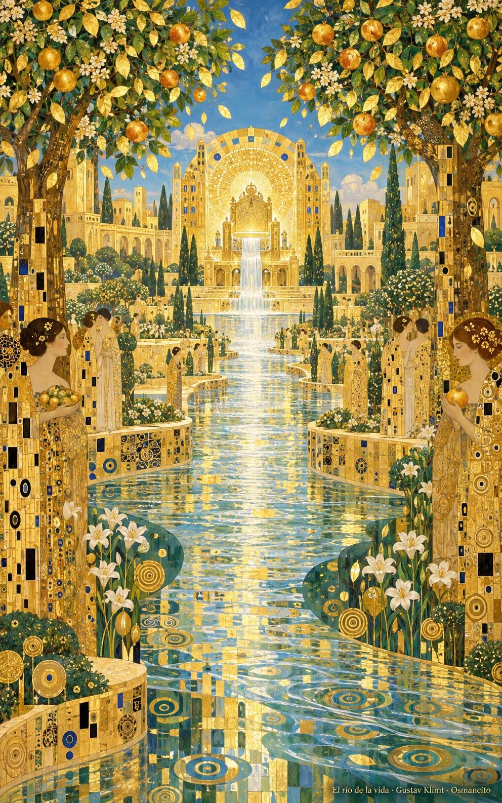
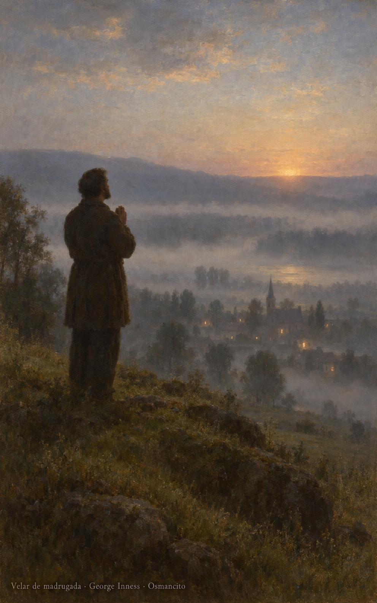

28 de noviembre de 2026
¡Buenos días!
Hojas que sanan
49
Ya estoy a punto de llegar.
Apocalipsis 22,7. Fuente
Que bebamos del río del agua viva que brota del trono, reluciente como el cristal, y que las hojas de su árbol sirvan para sanar a las naciones. Que no nos entorpezcan los vicios ni las preocupaciones: que aquel día no nos sorprenda desprevenidos. Velando y orando, que comparezcamos seguros y sin temor, con su nombre en la frente, en la ciudad del Señor donde ya no habrá noche, porque él nos iluminará para siempre.

- El río de la vida brota del trono y atraviesa la ciudad, con el árbol cargado de frutos a cada lado: Apocalipsis 22, sus hojas sirven para dar la salud a las naciones.

- El hombre vela en oración mientras el pueblo duerme y despunta la primera luz: Lucas 21, velen y oren para presentarse sin temor ante el Hijo del hombre.
¡Feliz sábado 28 de noviembre!
😊🙋♂
© 2026 Osmancito